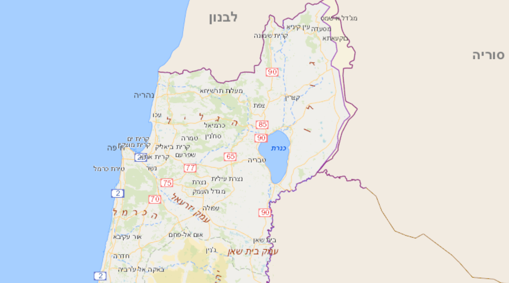

אזור הצפון
אזור זה הוא השופע ביותר במחלבות העוסקות בייצור סוגי גבינה רבים. עשרות מחלבות בוטיק פתוחות לביקור התיירים והם מציעים אטרקציות רבות וביניהן: סיורים, סדנאות, טעימות והרבה דברים אחרים.

החוויה הצ'רקסי
טבע עז
חלב אדיר
המאירי
ראמה
רום
הנוקד
חוות חלב עם הרוח
קדוש
מחלבת שוורצמן
חוות עין כמונים
מצפה ימים
משק קרמר מי ומו
שירת רועים
צאן אל
צפון ישראל
בחר מחלבה לבקר...
-
- אטרקציות
- חנות מוזיאון מסעדה
-
- שעות פעילות
- כל השנה
20:00-8:00 א-ש
-
- יצירת קשר
- בת שלמה
050-5537230
לא פותח